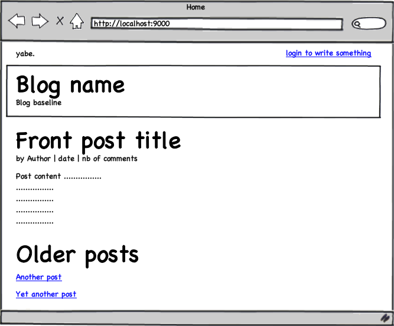

Building the first screen
Now that we have built a first data model, it’s time to start to create the first page of the application. This page will just show the most recent posts, as well as a list of older posts.
Here is a mock-up of what we want to achieve:

Bootstrapping with default data
In fact, before coding the first screen we need one more thing. Working on a web application without test data is not fun. You can’t even test what you’re doing. But because we haven’t developed the contribution screens yet, we can’t populate the blog with posts ourselves.
One way to inject default data into the blog is to load a fixture file at application load time. To do that we will create a Bootstrap Job. A Play job is something that executes itself outside of any HTTP request, for example at the application start or at specific interval using a CRON job.
Let’s create the /yabe/app/Bootstrap.java job that will load a set of default data using Fixtures:
import play.*;
import play.jobs.*;
import play.test.*;
import models.*;
@OnApplicationStart
public class Bootstrap extends Job {
public void doJob() {
// Check if the database is empty
if(User.count() == 0) {
Fixtures.loadModels("initial-data.yml");
}
}
}
We have annotated this Job with the @OnApplicationStart annotation to tell Play that we want to run this job synchronously at application start-up.
In fact this job will be run differently in DEV or PROD modes. In DEV mode, Play waits for a first request to start. So this job will be executed synchronously at the first request. That way, if the job fails, you will get the error message in your browser. In PROD mode however, the job will be executed at application start-up (synchrously with the play run command) and will prevent the application from starting in case of an error.
You have to create an initial-data.yml in the yabe/conf/ directory. You can of course reuse the data.yml content that we just used for tests previously.
Now run the application using play run and display the page http://localhost:9000/ in the browser.
The blog home page
This time, we can really start to code the home page.
Do you remember how the first page is displayed? First the routes file specifies that the / URL will invoke the controllers.Application.index() action method. Then this method calls render() and executes the /yabe/app/views/Application/index.html template.
We will keep these components but add code to them to load the posts list and display them.
Open the /yabe/app/controllers/Application.java controller and modify the index() action to load the posts list, as is:
package controllers;
import java.util.*;
import play.*;
import play.mvc.*;
import models.*;
public class Application extends Controller {
public static void index() {
Post frontPost = Post.find("order by postedAt desc").first();
List<Post> olderPosts = Post.find(
"order by postedAt desc"
).from(1).fetch(10);
render(frontPost, olderPosts);
}
}
Can you see how we pass objects to the render method? It will allow us to access them from the template using the same name. In this case, the variables frontPost and olderPosts will be available in the template.
Open the /yabe/app/views/Application/index.html and modify it to display these objects:
#{extends 'main.html' /}
#{set title:'Home' /}
#{if frontPost}
<div class="post">
<h2 class="post-title">
<a href="#">${frontPost.title}</a>
</h2>
<div class="post-metadata">
<span class="post-author">by ${frontPost.author.fullname}</span>
<span class="post-date">${frontPost.postedAt.format('MMM dd')}</span>
<span class="post-comments">
|
${frontPost.comments.size() ?: 'no'}
comment${frontPost.comments.size().pluralize()}
#{if frontPost.comments}
, latest by ${frontPost.comments[-1].author}
#{/if}
</span>
</div>
<div class="post-content">
${frontPost.content.nl2br()}
</div>
</div>
#{if olderPosts}
<div class="older-posts">
<h3>Older posts <span class="from">from this blog</span></h3>
#{list items:olderPosts, as:'oldPost'}
<div class="post">
<h2 class="post-title">
<a href="#">${oldPost.title}</a>
</h2>
<div class="post-metadata">
<span class="post-author">
by ${oldPost.author.fullname}
</span>
<span class="post-date">
${oldPost.postedAt.format('dd MMM yy')}
</span>
<div class="post-comments">
${oldPost.comments.size() ?: 'no'}
comment${oldPost.comments.size().pluralize()}
#{if oldPost.comments}
- latest by ${oldPost.comments[-1].author}
#{/if}
</div>
</div>
</div>
#{/list}
</div>
#{/if}
#{/if}
#{else}
<div class="empty">
There is currently nothing to read here.
</div>
#{/else}
You can read about how this template works in the Templates chapter. Basically, it allows you to access your Java objects dynamically. Under the hood we use Groovy. Most of the pretty constructs you see (like the ?: operator) come from Groovy. But you don’t really need to learn Groovy to write Play templates. If you’re already familiar with another template language like JSP with JSTL you won’t be lost.
OK, now refresh the blog home page.
Not pretty but it works!
However you can see we have already started to duplicate code. Because we will display posts in several ways (full, full with comment, teaser) we should create something like a function that we could call from several templates. This is exactly what a Play tag does!
To create a tag, just create the new /yabe/app/views/tags/display.html file. A tag is just another template. It has parameters (like a function). The #{display /} tag will have two parameters: the Post object to display and the display mode which will be one of home, teaser or full.
*{ Display a post in one of these modes: 'full', 'home' or 'teaser' }*
<div class="post ${_as == 'teaser' ? 'teaser' : ''}">
<h2 class="post-title">
<a href="#">${_post.title}</a>
</h2>
<div class="post-metadata">
<span class="post-author">by ${_post.author.fullname}</span>,
<span class="post-date">${_post.postedAt.format('dd MMM yy')}</span>
#{if _as != 'full'}
<span class="post-comments">
| ${_post.comments.size() ?: 'no'}
comment${_post.comments.size().pluralize()}
#{if _post.comments}
, latest by ${_post.comments[-1].author}
#{/if}
</span>
#{/if}
</div>
#{if _as != 'teaser'}
<div class="post-content">
<div class="about">Detail: </div>
${_post.content.nl2br()}
</div>
#{/if}
</div>
#{if _as == 'full'}
<div class="comments">
<h3>
${_post.comments.size() ?: 'no'}
comment${_post.comments.size().pluralize()}
</h3>
#{list items:_post.comments, as:'comment'}
<div class="comment">
<div class="comment-metadata">
<span class="comment-author">by ${comment.author},</span>
<span class="comment-date">
${comment.postedAt.format('dd MMM yy')}
</span>
</div>
<div class="comment-content">
<div class="about">Detail: </div>
${comment.content.escape().nl2br()}
</div>
</div>
#{/list}
</div>
#{/if}
Now using this tag we can rewrite the home page without code duplication:
#{extends 'main.html' /}
#{set title:'Home' /}
#{if frontPost}
#{display post:frontPost, as:'home' /}
#{if olderPosts.size()}
<div class="older-posts">
<h3>Older posts <span class="from">from this blog</span></h3>
#{list items:olderPosts, as:'oldPost'}
#{display post:oldPost, as:'teaser' /}
#{/list}
</div>
#{/if}
#{/if}
#{else}
<div class="empty">
There is currently nothing to read here.
</div>
#{/else}
Reload the page and check that all is fine.
Improving the layout
As you can see, the index.html template extends main.html. Because we want to provide a common layout for all blog pages, with the blog title and authentication links, we need to modify this file.
Edit the /yabe/app/views/main.html file:
<!DOCTYPE html >
<html>
<head>
<title>#{get 'title' /}</title>
<meta http-equiv="Content-Type" content="text/html; charset=utf-8"/>
<link rel="stylesheet" type="text/css" media="screen"
href="@{'/public/stylesheets/main.css'}" />
<link rel="shortcut icon" type="image/png"
href="@{'/public/images/favicon.png'}" />
</head>
<body>
<div id="header">
<div id="logo">
yabe.
</div>
<ul id="tools">
<li>
<a href="#">Log in to write something</a>
</li>
</ul>
<div id="title">
<span class="about">About this blog</span>
<h1><a href="#">${blogTitle}</a></h1>
<h2>${blogBaseline}</h2>
</div>
</div>
<div id="main">
#{doLayout /}
</div>
<p id="footer">
Yabe is a (not that) powerful blog engine built with the
<a href="http://www.playframework.org">Play framework</a>
as a tutorial application.
</p>
</body>
</html>
Refresh and check the result. It seems to work, except that the blogTitle and the blogBaseLine variables are not displayed. This is because we didn’t pass them to the render(…) call. Of course we could add them to the render() call in the index action. But because the main.html file will be used as main template for all application actions, we don’t want to add them every time.
One way to execute the same code for each action of a controller (or a hierarchy of controllers) is to define a @Before interceptor.
Let’s add the addDefaults() method to the Application controller:
@Before
static void addDefaults() {
renderArgs.put("blogTitle", Play.configuration.getProperty("blog.title"));
renderArgs.put("blogBaseline", Play.configuration.getProperty("blog.baseline"));
}
You will need to import play.Play in the Application.java file.
All variables added to the renderArgs scope will be available from the templates. And you can see that the method reads the variable’s values from the Play.configuration object. This object contains all configuration keys from the /yabe/conf/application.conf file.
Add these two keys to the configuration file:
# Blog engine configuration
# ~~~~~
blog.title=Yet another blog
blog.baseline=We will write about nothing
Reload the home page and check that it works!
Adding some style
Now the blog home page is almost done, but it’s not very pretty. We’ll add some style to make it shinier. As you have seen, the main template file main.html includes the /public/stylesheets/main.css stylesheet. We’ll keep it but add more style rules to it.
You can download it here, and copy it to the /public/stylesheets/main.css file.
Refresh the home page and you should now see a styled page.
Commit your work
The blog home page is now finished. As usual we can commit this blog version to bazaar:
$ bzr st
$ bzr add
$ bzr commit -m "Home page"
Next: The comments page.